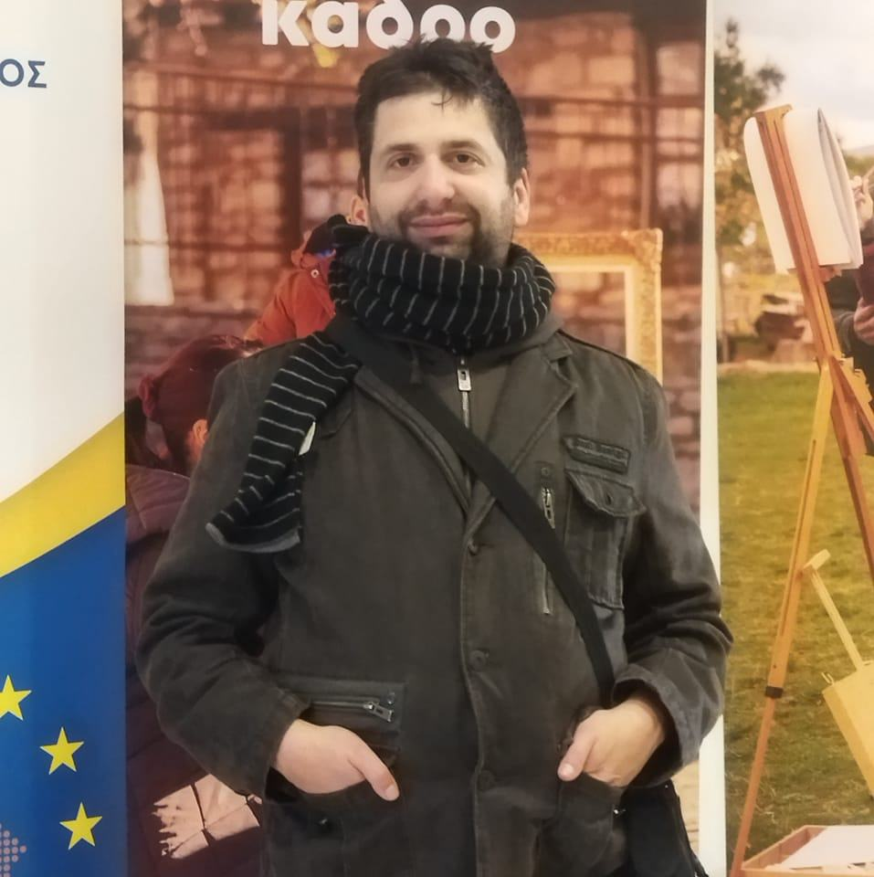
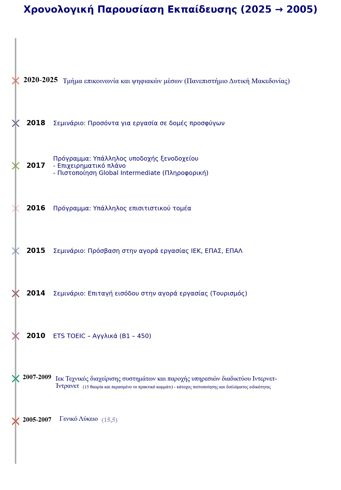
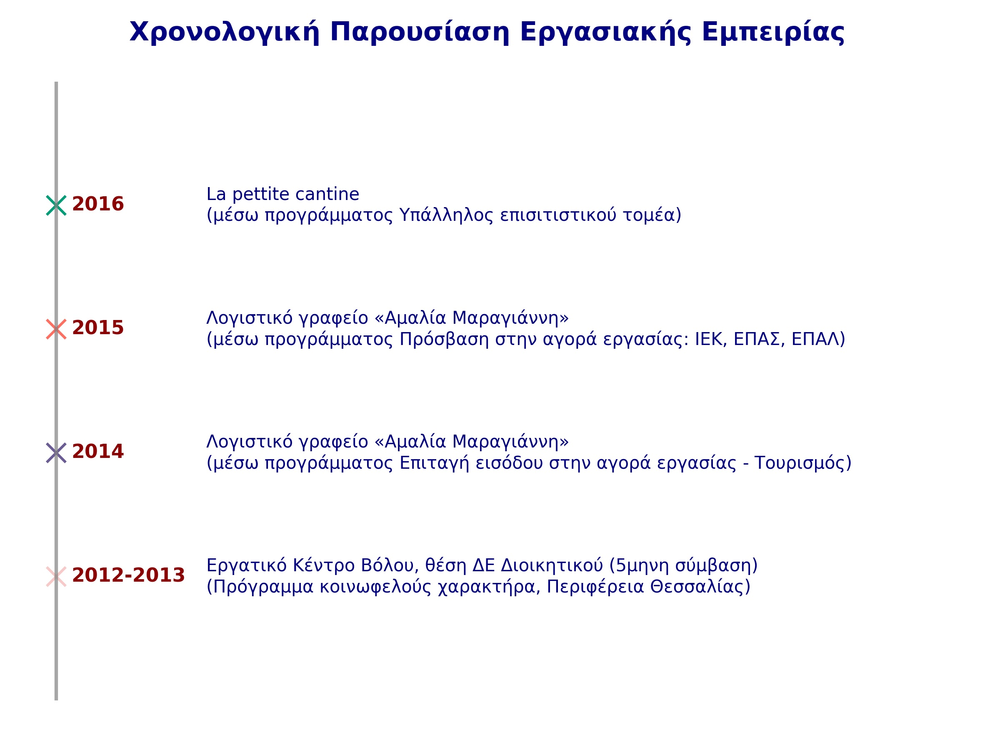

Ονομάζομαι Θωμάς , είμαι πτυχιούχος φοιτητής του τμήματος επικοινωνίας και ψηφιακών (το οποίο έχει έδρα την Καστοριά) του Πανεπιστημίου Δυτικής Μακεδονίας . Αυτός ο ιστότοπος αποτελεί το ψηφιακό μου βιογραφικό , στο οποίο μπορείτε να περιηγηθείτε , να μάθετε κάποια πράγματα σχετικά με εμένα,τους τομείς γνωσεών μου,εργασίας αλλά και δείγμα δουλείας στους εξής τομείς : Συγγραφή κειμένων,δημιουργία γραφικών,έρευνες που έχω κάνει (στα πλαίσια των ακαδημαικών μου σπουδών) και άλλα πρότζεκτ που είτε έκανα ο ίδιος είτε συμμετείχα.
Σε αυτή την ενότητα περιλαμβάνονται στοιχεία που αφορούν την εκπαίδευση μου.Κύριοι σταθμοί (από τον πιο πρόσφατο ως τον πιο παλιό) είναι : Η απόκτηση του πτυχιου από το πανεπιστήμιο Δυτικής Μακεδονίας (2020-2025) , η μάθηση αγγλικής γλώσσας (2010) , η απόκτηση της πιστοποίησης και διπλώματος του ΙΕΚ (2010) στο οποίο βρέθηκα τα έτη 2007-2009 αφού πρώτα τελίωσα την υποχρεωτική μου εκπαίδευση με το γενικό λύκειο τα έτη 2005-2007.Τα ενδιάμεσα είναι σεμινάρια που είχανε πρατική εργασία και ήταν κατά κύριο λόγο σχετικά με τον τουρισμό και την απόκτηση επιπρόσθετων γνώσεων - εκτός από δυο που ήταν γενικού ή ανθρωπιστικού περιεχομένου. Κάθε σεμιναριο ήταν από αναγνωρισμένο φορέα.Επίσης κάθε έγγραφο είναι διαθέσιμο εφόσον ζητηθεί.

⬆ Επιστροφή στην αρχικήΣε αυτή την ενότητα μπορείτε να δείτε την εργασιακή μου εμπειρία.Στην μέχρι τώρα πορεία μου έχω εργαστεί ως υπάλληλος γραφείου κατά κύριο εκτός από μια φορά που έχω εργαστεί στον τομέα του επισιτιστικού τομέα.Οι πιο πολλές θέσεις εργασίας ήταν ως συνέχεια των πιο πάνω σεμιναρίων , εκτός της πρώτης εργασίας στο Εργατικό Κέντρο Βόλου στο οποίο εργάστηκα με πεντάμηνη σύμβαση εργασίας.

⬆ Επιστροφή στην αρχική